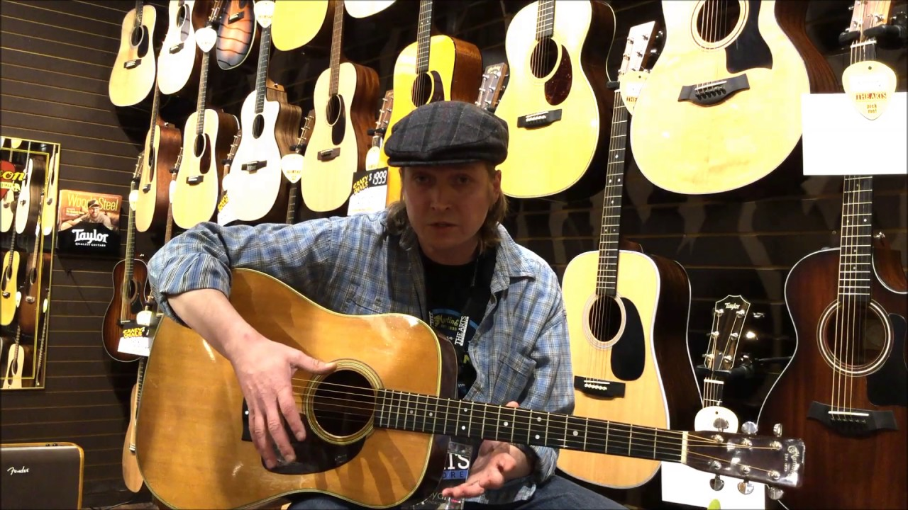
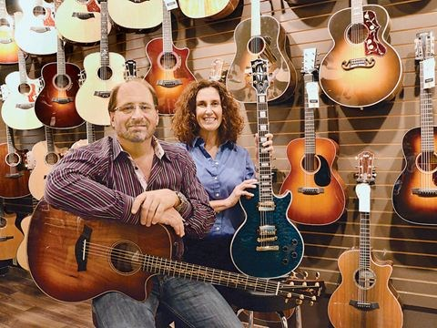

Welcome to our online store for musical instruments
We do have and a local shop, but for your personal utility, we create and a site from where you can easy find what you need. New and used guitars, effect pedals, weird acoustic instruments and a full arsenal of drums means we definitely have most anything you need to start your own bar band.
All musical instruments, and also sound equipment, purchased from "Taste The Music" have a 4 year warranty and a 40 day money-back guarantee without specifying a reason for the return.
Our staff is made of experienced musicians who are always ready to give you advice and answer any of your questions. They have years of experience and knowledge, and although they are professionals, their approach and attitude, are informal.
Musicians are cheerful in nature and they create a strong community. You are able to contact us at any out of the day/night, we are trying to response as soon as possible. If you are able to come visit the store, it will be plessure to have you here and tell you more about what you want. Down below you may see a recent footage of our crew! Enjoy yourself!
 